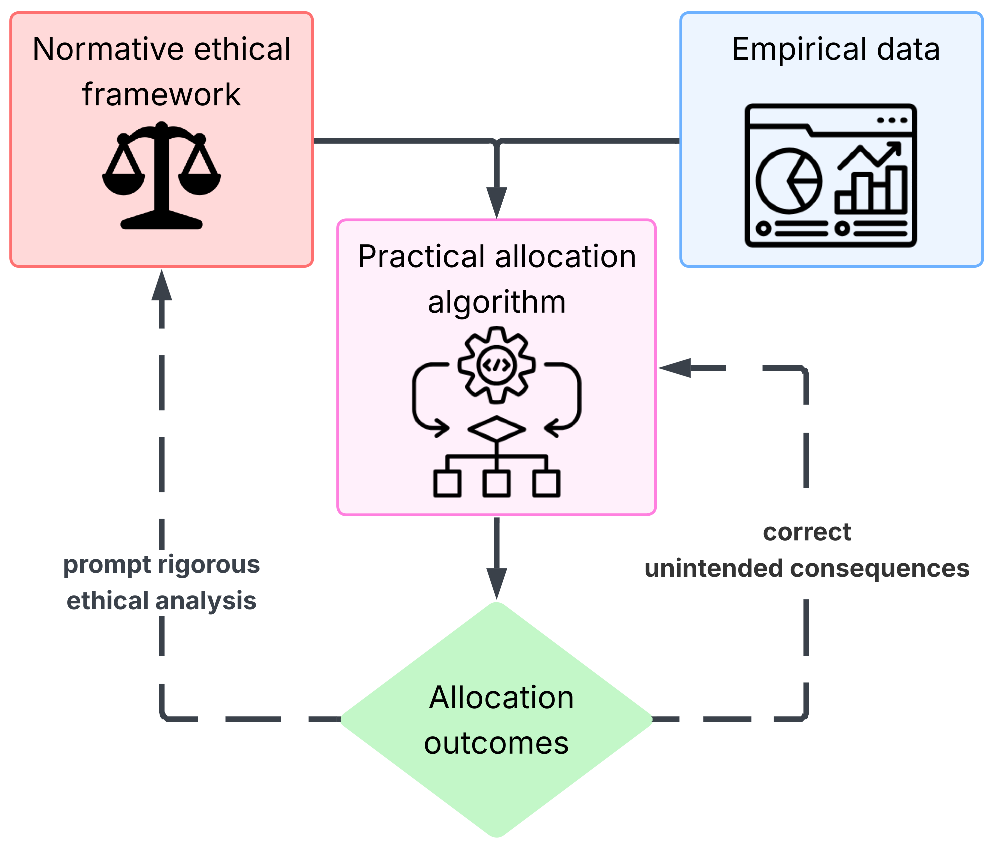
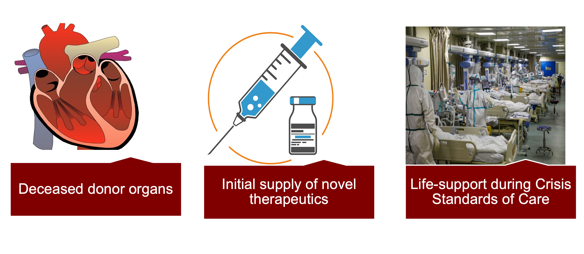

Funding
Our research is generously supported by:
Our Approach
An integrated cycle of ethical analysis and empirical research.

“Although some are better than others, no single principle allocates interventions justly. Rather, morally relevant simple principles must be combined into multiprinciple allocation systems.”
— Persad, Wertheimer & Emanuel, The Lancet, 2009
The Parker HCA Lab is a quantitative bioethics lab, leveraging advanced data science methods and normative analysis to engage the wicked problem of the allocation of scarce healthcare resources. We believe both methods are equally important to generate satisfactory solutions.
Research Areas
Our work spans three interconnected domains of scarce healthcare resource allocation.

Research Spotlights
Featured publications from the lab
{{ spotlight.title }}
{{ spotlight.abstract }}
{% if spotlight.citation %}{% if spotlight.doi %} {{ spotlight.citation }} {% else %} {{ spotlight.citation }} {% endif %}
{% endif %}